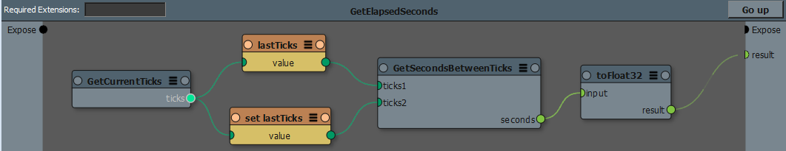

Variables¶
注釈
If you are looking for a less technical explanation please refer to Variables in the user guide.
Variables allow to declare and use named containers within a graph. Variables hold stateful values that will continue to exist between graph evaluations.
Variables can be useful for various situations:
- Creating a graph-owned value that evolves from evaluation to evaluation, such as a counter or a simulation.
- Reducing the number of ports for exposing common contextual data to deep sub-graphs, for example the currentFrameIndex. This can be seen as implementing a closure, where the parent graph is setting up its own evaluation context for all its sub-graphs.
- Using a unique, shared value: a KL Object created as a variable will be accessible by other graphs (see Variable scope), allowing to use shared storage.
While variables provide stable and shared states between graph evaluations, their values are not saved with the graph. After loading the graph, variables are always reset to their initial value.
警告
While variables can be used to build more powerful graphs, their statefulness could lead to issues that are hard to debug and reproduce if not used carefully.
Variable nodes¶
In order to be read (get) or written (set), variables must first be declared with a new variable node (see Creating variable nodes). The variable node holds the existence of its the actual value container, and must exist in order to get or set variable’s value.
The new variable node has an input port for specifying an initial value, which will be pulled only at the very first graph evaluation. Its output returns the current value of the node, and as such it acts like a get node. However, the new variable node’s output doesn’t have to be connected for to effectively declare the variable.
The set node will change the value of a variable, and its output will return its new value. The get node only has an output port returning variable’s current value. The execution order (or port order) between set and get nodes is very important, since the value of a get node will differ if it executes before or after a set node. While it is guaranteed that a get node connected on the left of a set node will execute before it, other situations might require more care to ensure that the execution order is the expected one.
注釈
If a get or set variable node refer to an undeclared or inaccessible variable (see Variable scope), an error will be reported, for example: Node ‘get’: unable to resolve var path ‘A’. Note that this error will be resolved as soon as an accessible variable is created.
Creating variable nodes¶
In the Canvas application, variables nodes can be added in the following ways:
- In the Canvas Graph window, right-click will bring a contextual menu:
- New Variable will open the New Variable dialog to define a new variable in the current graph.
- Read Variable (Get) will add a get variable node.
- Write Variable (Set) will add a set variable node.
- In the Canvas Graph window, the Tab key will open a search widget in which:
- typing “var.” will open the New Variable dialog to define a new variable in the current graph.
- typing “get.” will give a list of available variables that are accessible from the current graph, and selecting one of these will create a get node for that variable.
- typing “set.” will a list of available variables that are accessible from the current graph, and selecting one of these will create a set node for that variable.
- The explorer window has a Variables root item which shows the path of existing graph variables. Dropping these in the Canvas Graph window will create a get variable node with the absolute path of the variable.
Variable scope¶
While variables are always accessible from the graph where they are declared (new variable node), they might be accessible from other graphs based on some simple scoping rules.
In order to bind a get or set node to a variable, the variable path must resolve to an accessible variable. The variable will first be searched in the same graph. If not found, the variable will be searched in the parent graph, and so on until the top graph is reached.
If not found, the variable path will then be resolved as an absolute path, that is, its path from the top graph down to its actual declaration (new variable) node, for example myGraph.mySubGraph.A.
Because variables are searched from the current graph and up, this allows to implement closures, and these can be overridden by children graphs. For example, a Time variable could be defined at the top graph level, and a sub-graph could implement time remapping by defining its own relative Time with a different value. Of course this assumes that sub-graphs are accessing the time with a get Time node.
Because variable name bindings are dynamically resolved at graph modification time, it is fine for a preset to require a variable (get or set node) not declared inside it. As such, it assumes that the variable will be defined by its parent graphs.
Variable versus Cache¶
While both a cache node and a variable create a stateful value container within a graph, the following differences should be noted:
- A cache node will be recomputed if its input value or sub-graph changes, whereas variables’ value is initialized only at the first evaluation. As such, a variable can be used to ensure that a same KL object is reused for all graph evaluations (if no set variable node sets a new object).
- A cache node should only be used for performance, as it has no effect on the actual graph result. However, variables can have an effect on the behavior of the graph because they can accumulate changes from evaluation to evaluation.
Example¶
In the example below, the GetElapsedSeconds preset initializes the lastTicks variable as the current ticks. Then, at each evaluation, the existing lastTicks value gets compared with the newly updated value, and the difference is outputted in seconds.
